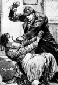

1888 yılında Londra’nın kenar semtlerinde en az beş fahişeyi öldüren Karındeşen Jack lakaplı katilin hikayesi en gizemli suç vakalarından birisidir. Jack asla yakalanamamış, gerçek kimliği hep bir tartışma konusu olarak kalmıştır. Günümüze kadar cinayetlerin ardındaki kişi ile ilgili düzinelerce teori ortaya atılmıştır.

Cinayetler Londra’nın yoksul bir bölgesi olan Whitechapel’de yaşandı. Burası yaklaşık 1200 fahişenin yaşadığı bir yerdi. Karındeşen -bu lakap olaylarda kullanılan kan dondurucu tekniğe gönderme yapan Londra gazeteleri tarafından yaygınlaştırılmıştı- genellikle orta yaşlı kadınları hedef alıyordu. Kurbanlarına Cuma, Cumartesi ve Pazar akşamları saldırıyordu. Öldürülen kadınların parçalanmış cesetleri ara sokaklarda bulunuyordu.
Olaylar aylarca Londra basınında yankılanmaya devam etti. Her bir cinayetten sonra, dikkatlerin yöneldiği Londra’nın kenar semtleri ile ilgili duyarlı gazete öyküleri yayınlanmaya başlıyordu. Ayrıca Viktorya Dönemi polisinin yetersizliği de ortaya çıkmış oluyordu. Kraliçe Viktorya (1819–1901) bile cinayetler devam edince bu durumdan şikayetçi olmaya başlamıştı. “Dedektiflerimiz daha iyi yetiştirilmeli,” diyordu.
1888 yılının sonlarında Londra’daki bir haber ajansı katilden mektuplar almaya başladı. Mektuplar cinayetlerin devam edeceğini söylüyordu: “Ben karın deşmeyi bırakamam!” Mektuplardan biri Karındeşen Jack diye imzalanmıştı. O dönemde mektupların gerçek olduğu düşünülmüştü. Günümüzde ise bunların dalga geçmek amacıyla yazıldığına inanılmaktadır. Kurbanlardan birinin yanında bulunan anti-semitik graffitinin de olaylarla bağlantılı olabileceği sanılmış, ancak polis çizimlerin ya olayla bağlantısız olduğu ya da katilin bir Yahudi olduğu şüphesini uyandırmak için oraya bilerek bırakıldığı sonucuna varmıştır.
Polis sonunda şüpheliler listesini dört kişiye indirmeyi başardı. Ancak hiç biri olayla ilgili suçlanmadı. Yüzyıl boyunca amatör Karındeşen Jack uzmanları çok sayıda başka şüpheli buldular. Bunların arasında saygın bir empresyonist ressam ve kraliçenin torunu da bulunuyordu.
Çözümsüz kalsa da davanın önemli sonuçları oldu. Londra polis şefi Charles Warren (1840–1927) başarısız olduğu için istifa etti. Sonraki yirmi yıl içinde polis yeni araştırma teknikleri geliştirdi. Örneğin; temel bir delil olarak parmak izi kullanılmaya başlandı. Karındeşen davası aynı zamanda gazetelerin seri katil takma adlarını popüler hale getirmelerinin ilk örneği olarak tarihe geçti. Ancak daha sonraki seri katillerin hiçbiri ilkinin ününü aşamayacaktı.
Ek Bilgiler
1- 2006 yılında yapılan bir BBC anketinde Karındeşen en kötü İngiliz seçildi. Jack ikinci en kötü olan Thomas Becket’ı (1118–1170) geride bırakmıştı.
2- Amerikan suç romancısı Patricia Cornwell (1956–), Karındeşen davasını araştırmak için 6 milyon dolar harcadı. Ressam Walter Sickert’ın (1860–1942) suçlu olduğunu ispat etmeye çalışıyordu. 2002 tarihli “Portrait of a Killer: Jack the Ripper—Case Closed” (Bir Katilin Portresi: Karındeşen Jack-Dava Kapandı) isimli kitabında bulgularını yayınladı. Ancak pek çok Karındeşen uzmanı ona karşı çıktı.
3- 1988 yılında FBI katilin psikolojik profilini çıkardı. Katil beyaz, heteroseksüel bir erkekti. Çok sayıda seks partneri olan dominant bir annenin çocuğuydu. 20’li yaşların sonlarından 30’larının ortalarına kadar yalnız bir hayat yaşamıştı. FBI profilcileri katilin intihar etmesinin mümkün olmadığını söylüyorlardı. Büyük ihtimalle yakalanmaktan korktuğu için cinayetlerine son vermişti.